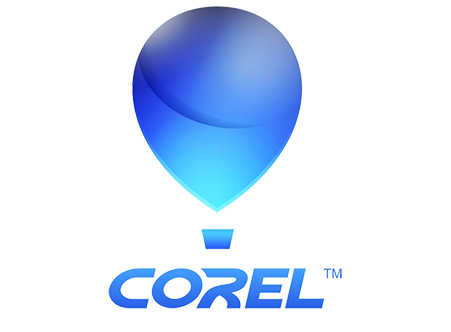
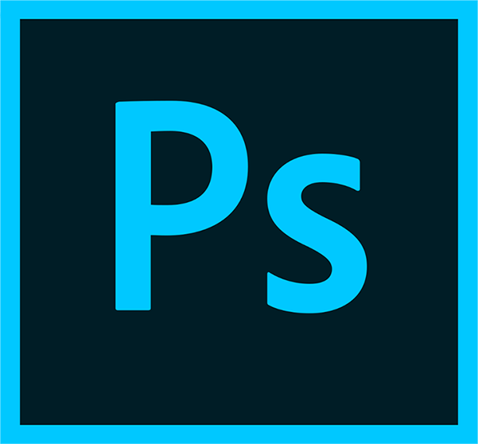
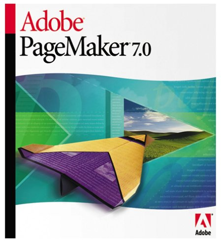

Corel Draw

This course offers a wide range of features and tools that can help you to work with different design approaches. The CorelDraw software is designed for graphic designers, fashion designers, textiles designers, print professionals, packaging firms, and aspiring designers. At CODEGEN, we offer a full-fledged and best training in CorelDraw by the best professionals of industry.
Learning Outcomes of CorelDraw
Corel Draw is vector based application which means the images are resolution independents & can be enlarged to any size without any distortion in quality. It is built and designed to meet the demands of today's working designer to create ads or collateral for print or for the web.
- Chapter 1: Understanding CorelDraw
- Exploring the User Interface
- Working with Basic Geometric Figures
- Undoing & Redoing of Actions
- Working with Page Layout
- Chapter 2: Working with Lines, Outlines & Shapes
- Drawing curves using lines
- Working with Outlines
- Working with Brush Strokes
- Modifying Basic shapes
- Exploring Grid & Guidelines
- Exploring Grid & Guidelines
- Chapter 3: Working with Objects
- Handling Objects in CorelDraw
- Creating an outline around an object
- Positioning Objects
- Aligning & Distributing Objects
- Sizing & Scaling Objects
- Creating Graphical Special Effects
- Chapter 4: Working with Colors & Filling Objects
- Creating a Custom Color Palette
- Editing a Custom Color Palette
- Chapter 5: Introduction to Tables
- Adding a table
- Inserting and deleting Table rows & columns
- Formatting Table
- Chapter 6: Working with Text
- Creating Different types of text
- Changing the Appearance of Text
- Finding & Replacing text
- Applying Effects to Text
- Fitting text to an object's Path
- Chapter 7: Working with Layers
- Creating a layer
- Changing layer properties
- Moving objects between layers
- Deleting a layer
- Chapter 8: Working with Bitmaps
- Understanding the image types
- Working with Bitmap & Vector
- Images Importing a Bitmap
- Modifying a Bitmap
- Tracing Bitmaps
Projects in CorelDraw
- Logos
- Stationery
- Brochures
- Magazines
- Catalogues
- Prospects
- Newspaper
- Newsletter
- Books Cover
- Packaging
- Calendars
Certifications
For CorelDraw You will get Training certificate and Project letter from CODEGEN on successful completion of the program. It put you on the path to career enhancement and greater success in your chosen profession. Take advantage of a full suite of progressive benefits while increasing your knowledge, effectiveness and marketability.
Flash
Overview:
Adobe Flash is a tool for creating animation and multimedia content that shows consistently across desktops, mobile devices, and different browsers.Adobe Flash software is a powerful authoring environment for creating animation and multimedia content. Design immersive and interactive experiences. Flash enables users to easily combine multiple symbols and animation sequences into a single optimized sprite sheet for better workflow, build more engaging content using native extensions to access device-specific capabilities, and create assets and animations for use in HTML5.
ADOBE FLASH COURSE TOPICS
- Creating and manipulating Flash objects
- Working with vector and bitmap graphics
- Beginning to advanced animation techniques
- Working with layers
- Understanding ActionScript
- Planning and creating Flash projects
- Working with Flash movies
Certifications
For FLASH You will get Training certificate and Project letter from CODEGEN & DOEACC on successful completion of the program. It put you on the path to career enhancement and greater success in your chosen profession. Take advantage of a full suite of progressive benefits while increasing your knowledge, effectiveness and marketability.
Photoshop

Overview:
We are not giving just the basics training for Photoshop rather we make our students work on various projects which give them hands on experience on photo retouching, image editing, text effects, cut-outs, patterns, background designing, image manipulations, and layouting. Photoshop offers you many opportunities to make your images look great and eye-catchy as it is the only image editing application that is used to manipulate and enhance your digital photographs and images.
Learning Outcomes of Adobe Photoshop
- Introduction to Photohsop's Interface
- The Photoshop Workspace, Preferences, and Tools
- Finding and Processing Images
- Creating New Images, Resizing, and Adjusting Resolution
- Layers, Layer Masks, Blending Modes and Smart Objects
- Selections and Channels
- Working with Paths and professional technique of cut out making
- Working with Vector Shapes
- Working with Text
- Enhancing, Correcting, and Retouching
- Lightening, Darkening and Changing Contrast
- Color Correction and Color Changes
- Transparency, Opacity, Silhouettes, and Image Collages
- Noise, Grain, Dust, Pixelization, and Jagged Edges
- Retouching and Restoring Digital Images
- Filters and Layer Styles Chapter
- Distortion Effects
- Text Effects
- Working with 3D Images
- Publishing and File Formats
Projects in Photoshop
- Retouching
- Color Balancing
- Brush Effect
- Filter Effect
- Compositing
- Matte Painting
- Digital Painting
- Image Manipulation
- Special Effects
- Text Effects
- Wallpapers
- Posters
- Boards
- Banners
- Covers
- Ads
- Photo Montage
Certifications
For Photohsop You will get Training certificate and Project letter from CODEGEN & DOEACC on successful completion of the program. It put you on the path to career enhancement and greater success in your chosen profession. Take advantage of a full suite of progressive benefits while increasing your knowledge, effectiveness and marketability.
Page Maker

Overview :
PageMaker is one of the first Desktop Publishing (DTP) software introduced three decades ago. It is a page layout application, commonly used in the Print Media, Publication Industry, Advertising, Graphic Designing and every other domain where paper printing is a common practice. With the help of PageMaker application, complex multiple page books, brochures, and other printable materials can be easily handled by bringing the whole paper layout on a single sheet that dissolves the confusion of managing hundreds of pages. With this publishing, a Text Book, Magazine, Novels or even a single page printable publications or brochures and business cards can be easily handled.
Learnings of this course:
- Section 1: Introduction
- In this beginning lecture of Adobe PageMaker course, we will discuss various elements of print design that can be done using the application. We introduce you to the Print design, Paper sizes and give you a brief detail about how various designs are placed on the sheets at once.You are also introduced to the interface of the PageMaker and start to explore the Tools bar, Icons, Page Setup, Windows, Control Palette and other similar windows readily available at the first look. We will discuss in brief about the publication window and the differences between a Blank Page, Maser Page, and a Current Page icons. We also talk about Horizontal and Vertical Scroll Bars. Finally, you will gain knowledge about styles and how to use colors palette in PageMaker.
- Section 2: Tools
- The lecture is entirely concentrated upon the Tools available in the Toolbox of PageMaker.In this section, you will learn how to access various tools available in the toolbar and what are the actions you can perform with the help of every tool. We will start with the basic tools and jump into other two types of tools that are Drawing Tools and Visual Tools. In the basic tools, you will learn to start with the pointer tool, Text tool, Rotation tool and the crop tool.Once you are finished with the basic tools, we will start working on the drawing tools.Finally, we talk about the Visual Tools like hand tool and zoom tool, through which you will gain control over easily navigating the documents and the application.
- Section 3: Control Palette & its Properties
- Control Palette is the most important section of the PageMaker software, looking at the importance of the feature, this section is entirely dedicated to teaching the features of the Control Palette in three lectures. PageMaker’s control palette is a collection of Fonts, Alignment properties, Leading, Kerning, Tracking, Scaling, Baseline shift and many other features related to the Text look and feel. We will discuss the Character View and explain about toggling buttons to choose the Type Style, Case position, Type Size. We will talk about the concepts like Leading, Kerning, shifting the position of the baseline and Horizontal Scale.
- Section 4: Menu and Setting
- At this point of the course, we will discuss the Elements menu which is typically used to handle the graphic and adjustments of various elements in the PageMaker software. We will teach you how to take the various shapes and have total control over the Fill, Stroke of the elements. You will also learn about how much stroke should be applied to the shapes and how to control the color visibility of the element. Then we shift into arranging, where two or number of elements are arranged using the arrange feature. You will learn how to shift the elements from front to back and vice versa. The second part of the alignments lectures talks about positioning the section of the selected objects. Text wrapping is one of the most important features you will learn in this lecture. Locking and Unlocking, Masking and Unmasking are the next set of lectures you will come across. Here you will learn how to use an Image and a shape to Mask the image and set the content of the image exactly as you intended. Rounded edges are one of the many topics you will learn by the end of the Menu and Setting.
- Section 5: Text tool & its Properties
- The prime purpose of the PageMaker is to deliver high-quality printing outputs, which obviously contains a lot of text. So, controlling the text is the important term you should learn. This section is entirely dedicated to the text tool and various types of methods of its usage.You will check various ways of how to create text blocks and how to control the text inside the box by changing the sizes of the frame and extending the frame one point of the document to the next point. How to control the Paragraphs and work on alignments and text designs. During this advanced lecture, you will learn about character view, paragraph view, specifications dialog box, Scaling and rotating the frames and fonts, setting line end, line case tracking and much more.
Certifications
For PageMaker You will get Training certificate and Project letter from CODEGEN & DOEACC on successful completion of the program. It put you on the path to career enhancement and greater success in your chosen profession. Take advantage of a full suite of progressive benefits while increasing your knowledge, effectiveness and marketability.